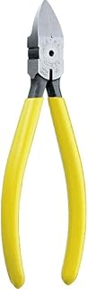

現場で実際に使用
【現場で使ってる】電気工事士おすすめニッパー3選
電気工事の現場で実際に使っているニッパーを紹介します。
その中でも「切り口のきれいさ」と「使いやすさ」で選んだ3つです。
迷ったら『77A-175』でOKです！！
VA線や少し太めの線も切りやすく、電気工事の現場でかなり使いやすい1本です。
最初の1本をしっかり選びたい人や、現場で頼れるニッパーを使いたい人におすすめです。


③ 『ケイバ 薄刃ニッパ NH-E26』

切れ味が良く、仕上がりをきれいにしたい人におすすめです。
インシュロックもツラで切りやすく、見た目もかなりきれいに仕上がります。
ストレート刃をおすすめする理由
ストレート刃のニッパーは、インシュロックの切り口がきれいに仕上がるのが大きなメリットです。
斜め刃だと出っ張りが残りやすく、手に引っかかったり見た目も少し雑に見えてしまいます。
ストレート刃ならツラで仕上がるので、引っかきキズもできにくく、仕事がきれいに見えます。